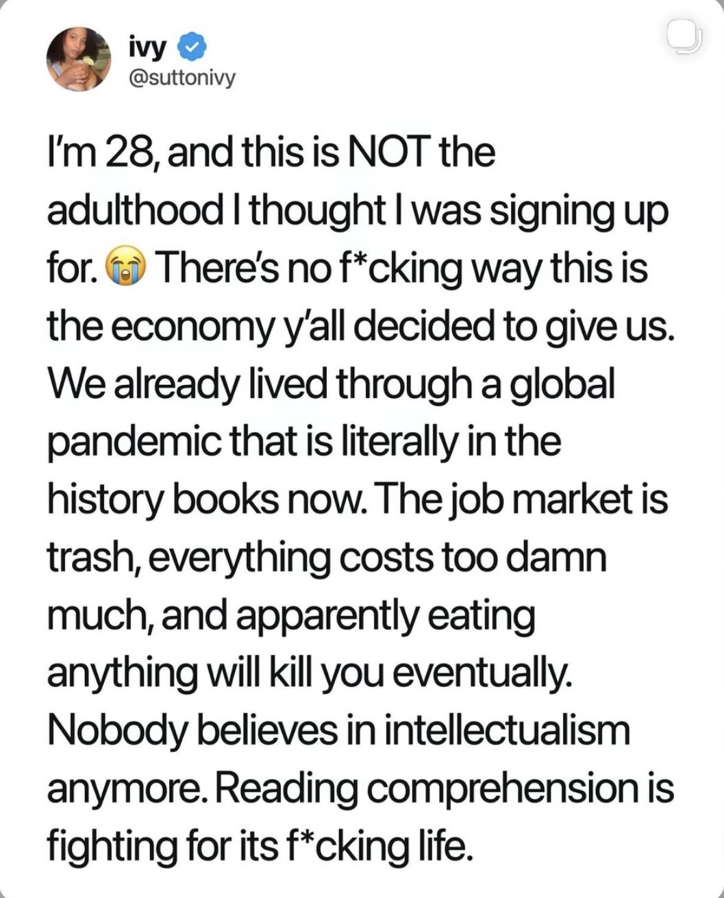
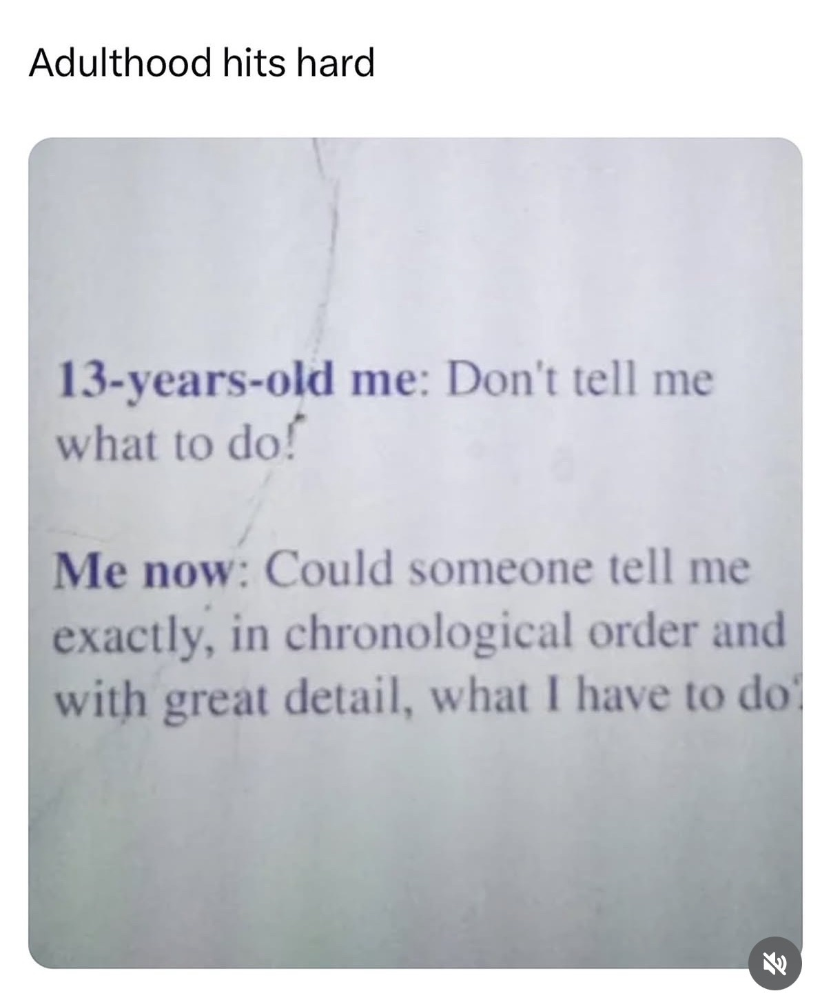

This screenshot speaks to an outcome that could happen when a traditional milestone that says we have reached adulthood falls through.

Adulting seems to be an allusion. The world our parents told us we were going to get is not the world that got handed to us. Things fall apart. Adulting does too apparently.

As a kid we have it all figured out, but this screenshot suggests that young adulthood is not that way at all.